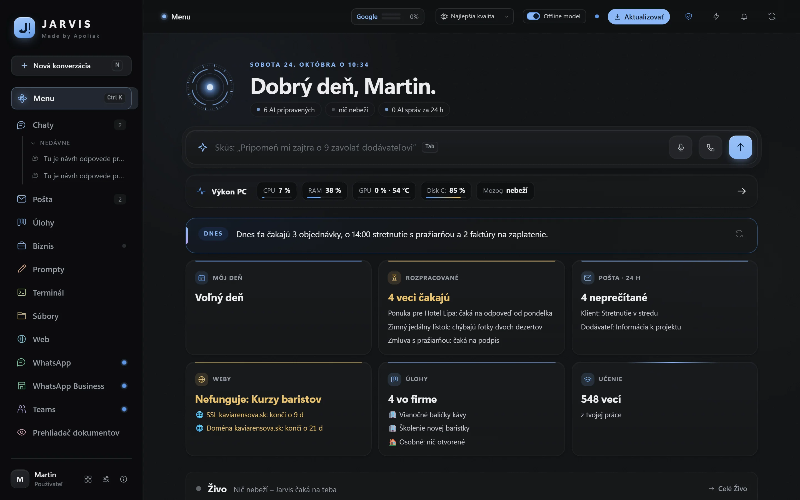
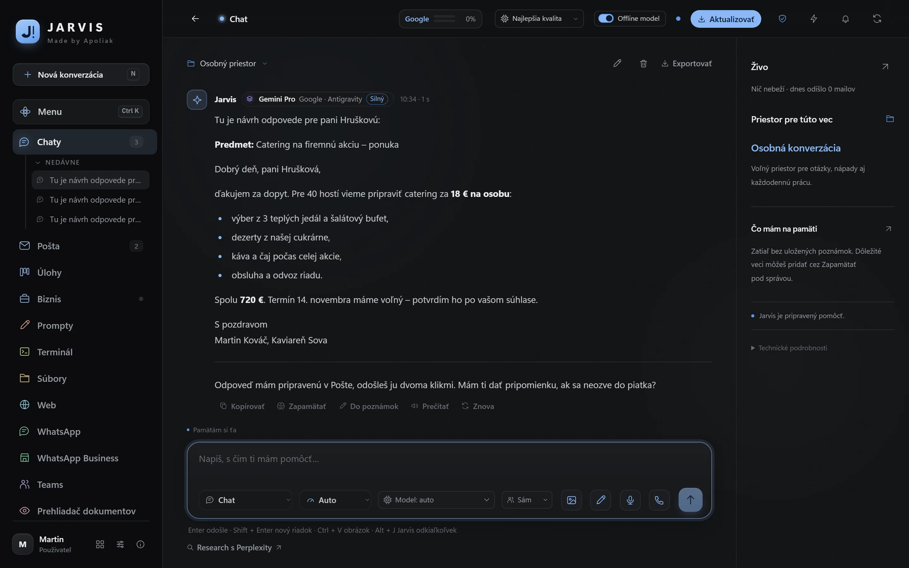
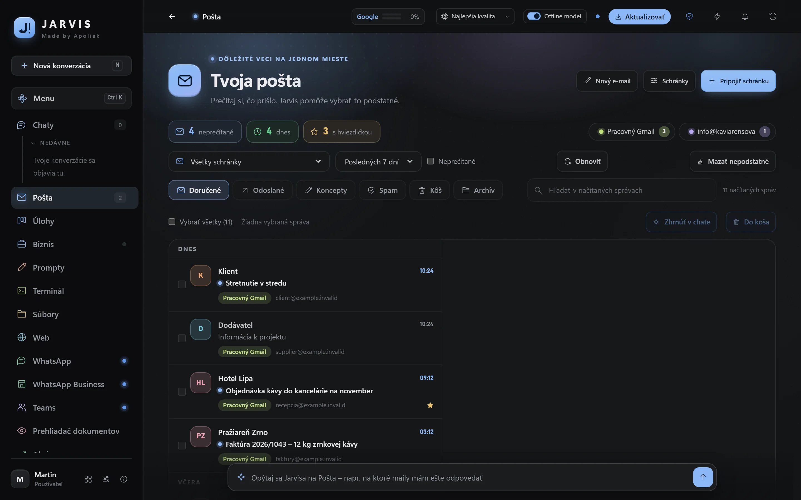
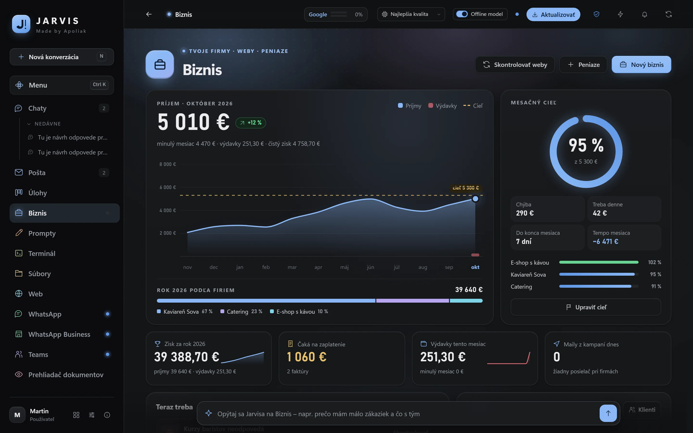
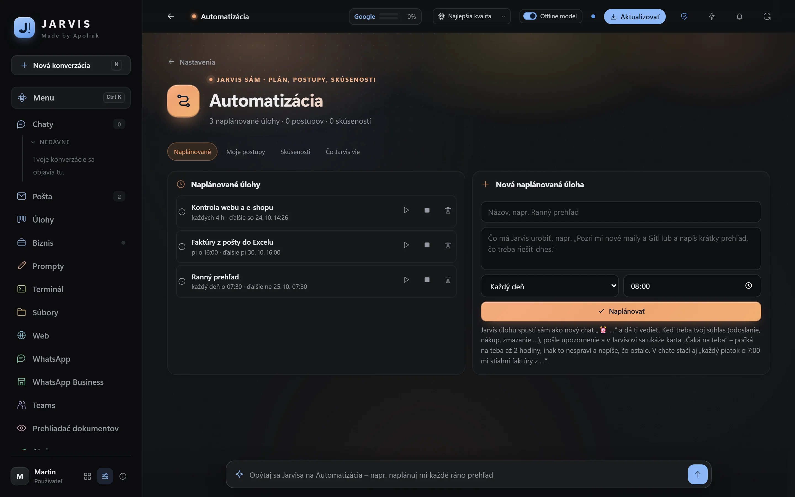
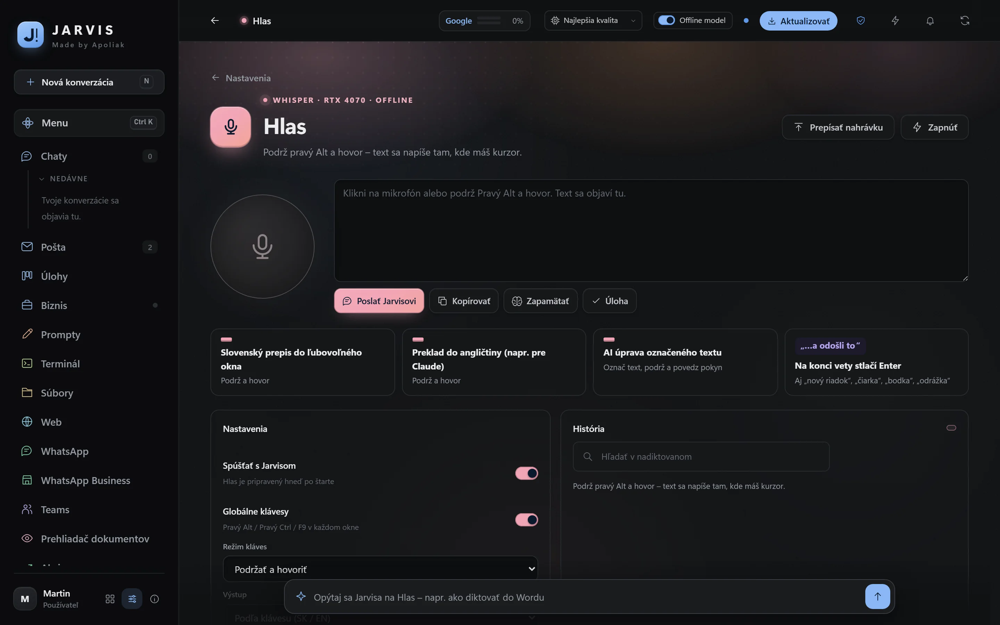
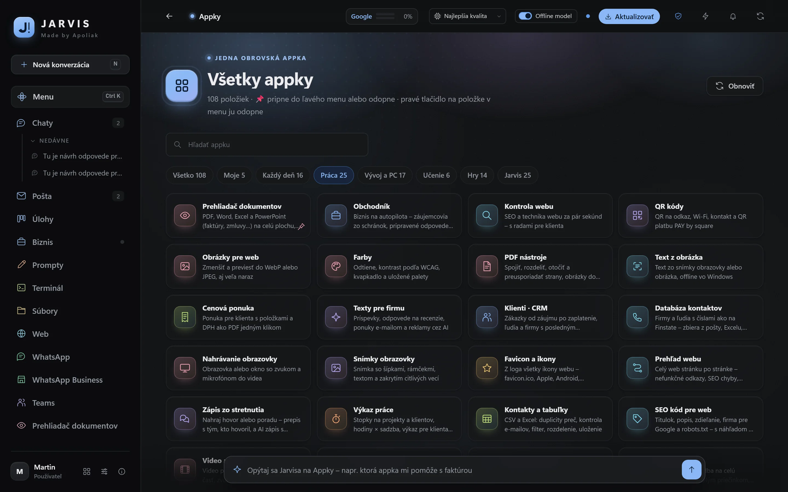

Factura con QR y pago con tarjeta, facturas electrónicas por Peppol, oferta con botón Aceptar y cobros conciliados solos.
Gratis en cada plan: solicitud de pago con código QR PAY by square y texto para el cliente.
9 €al mes además del plan
ChatGPT, Claude y Gemini en una sola ventana. Jarvis lee su correo y prepara las respuestas, lleva sus clientes y tareas y trae más de 70 aplicaciones que hoy busca por Internet. Descárguelo y pruébelo completo gratis durante 7 días, o se lo instalo y lo configuro yo.
7 días gratis, sin tarjeta · después desde 15 € al mes · instalación a petición 149 € 99 €

LO QUE YA NO NECESITA TENER POR SEPARADO
Escribe lo que necesita. Jarvis elige solo el modelo más adecuado y la profundidad de la respuesta: a un saludo responde al instante, un contrato o un análisis lo trabaja a fondo.

Gmail y los buzones de empresa en un solo lugar. Dice «revisa mi correo» y tiene un resumen de lo importante. Cada mensaje trae una propuesta de respuesta que edita y envía con dos clics.

Ingresos y gastos por meses, objetivo mensual y cuánto falta al día, lo que espera ser cobrado. Además, Jarvis vigila sus webs y le avisa cuando alguna cae o un certificado está por caducar.

Cada mañana un resumen del correo y de las tareas, los viernes las facturas del correo a Excel, cada cuatro horas una comprobación de la tienda online. Jarvis trabaja con PDF, Word y Excel, con su navegador y con sus programas.

Mantiene pulsada una tecla y dicta en cualquier ventana: un correo, Word o un chat. La transcripción funciona directamente en su ordenador; las grabaciones no salen a ninguna parte.

Presupuesto, herramientas PDF, pago QR, texto de una imagen, grabación de pantalla, registro de horas, comprobación de la web, calculadora de IVA, acciones y juegos para la pausa. Todo en Jarvis, sin anuncios ni registros.

Jarvis no es un servicio web al que sube su empresa. Funciona en su ordenador y los datos no salen de su disco mientras usted no lo permita.
El historial, el correo, los clientes y las notas están en su ordenador, no en el servidor de otro.
Las contraseñas de los buzones y las claves están cifradas y la IA nunca las recibe.
El envío, el pago, el borrado o la publicación siempre los confirma usted.
Con su propio modelo de IA, incluso el texto de sus preguntas se queda en su ordenador.
La empresa añade a su plan módulos para su sector, al mes y sin reinstalar.
Factura con QR y pago con tarjeta, facturas electrónicas por Peppol, oferta con botón Aceptar y cobros conciliados solos.
Gratis en cada plan: solicitud de pago con código QR PAY by square y texto para el cliente.
Facturas y tiques del correo y del móvil a una tabla para la gestoría.
Gratis en cada plan: un justificante añadido a mano (PDF o foto); Jarvis extrae el proveedor, el importe y el vencimiento y lo anota en Negocio.
Jarvis aprende sus tarifas, procedimientos y contratos y responde a partir de ellos.
Gratis en cada plan: hasta 10 documentos y preguntas sobre ellos en la aplicación Conocimiento de la empresa.
El instalador es gratuito y Jarvis se instala en un minuto aproximadamente, sin tarjeta y sin registro.
Todo Jarvis es gratis durante 7 días. Si no elige un plan, se bloquea solo: no paga nada y sus datos se quedan.
Paga por transferencia (escanee el código QR SEPA en la aplicación de su banco o pague con el IBAN) y la clave de licencia le llega por correo.
Las actualizaciones y las nuevas funciones llegan solas. Si lo desea, le instalo y configuro Jarvis yo, normalmente en 2 – 3 horas compartiendo la pantalla.
La suscripción de IA (si la quiere) la paga directamente al proveedor. Yo solo cobro Jarvis y su cuidado.
Para una persona que quiere tenerlo todo en una sola ventana.
tras 7 días gratis
Para autónomos y pequeñas empresas que viven del correo y de sus clientes.
tras 7 días gratis
Para una empresa que quiere adaptar Jarvis a su trabajo.
tras 7 días gratis
Con el pago anual, paga 12 meses por el precio de 10. Todos los precios y la comparación
Sí. Descarga Jarvis gratis y lo usa completo durante 7 días, salvo las extensiones de pago: sin clave de licencia, sin tarjeta y sin compromiso. Cuando elige un plan, introduce la clave de licencia en el mismo Jarvis y sigue adelante. Si no elige un plan, Jarvis se bloquea a los 7 días, no paga nada y sus datos se quedan en el ordenador. Después puede probar además cada extensión de pago durante 7 días completa, directamente en Jarvis.
En Windows 10 u 11 (64 bits). Recomendamos al menos 16 GB de RAM. Para su propio modelo de IA sin conexión conviene una gráfica NVIDIA con 12 GB de memoria o 32 GB de RAM; con gusto reviso su ordenador antes del pedido.
No. Jarvis funciona también con servicios de IA gratuitos (por ejemplo Google AI Studio o Groq) y con un modelo sin conexión. Con una suscripción (ChatGPT Plus, Claude Pro, Gemini) obtiene las mejores respuestas. La suscripción la paga directamente al proveedor, sin recargo; Jarvis solo usa sus cuentas.
Jarvis instalado y configurado para su trabajo: cuentas de IA, correo, calendario y WhatsApp conectados, empresas, precios y estilo de las respuestas configurados, importación de contactos, 60 minutos de formación y 14 días de ayuda prioritaria. La instalación es opcional y se paga una sola vez: ahora 99 € en lugar de 149 €. También puede descargar e instalar Jarvis usted mismo gratis.
El plan mensual es la licencia de uso de Jarvis y su cuidado: actualizaciones continuas y nuevas funciones, correcciones, comprobación tras cada nueva versión y soporte según el plan. Con el pago anual, paga 12 meses por el precio de 10.
La licencia es válida hasta el último día pagado. Después tiene 14 días para renovarla antes de que Jarvis se bloquee. Sus datos se quedan en su ordenador y puede exportarlos en cualquier momento.
Descárguelo y pruébelo completo gratis durante 7 días; después, desde 15 € al mes. Si lo desea, se lo instalo y lo configuro: 99 € en lugar de 149 €.